Previous slide Next slide Toggle fullscreen Toggle overview view Open presenter view
REC
AWS× 教育の公式リソース 100 連発.
松田健太（Qiita @kenken38 ） 2026.10.16 ・ AWS Education WG
Tracklist
01 AWS の教育向け公式リソースはどこにある？
02 AWS×教育の公式リソース索引はどこから読む？
03 索引から1本解説：障害のある生徒の進路を AI で支える米国の事例は日本でも使える？
04 この発表資料はどうやって作った？
01
Where Are The Resources
AWS の教育向けどこにある？
01
教育の公式リソースは100か所以上に散らばっている
34 ブログ
42 区画
27 サイト
103 か所 見つけた入り口の合計
数え方：索引に収録した 2,834 件の掲載先を、ブログはブログ単位、aws.amazon.com はパスの最初の階層（日本語版は別に数える）、そのほかはドメイン単位で数えた。文字の大きさは記事の件数を表す。すべてを網羅できたわけではないため、実際の入り口はこれより多い可能性がある。
02
How To Read
AWS×教育のどこから読む？
厳選 100 テーマ別 全件索引
02
公開ページは目的に合わせて3つのタブを使い分ける
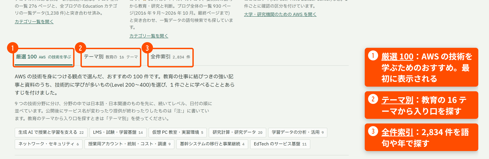
タブは、ページ上部の件数の表示のすぐ下にあります。
02
AWS の技術を学ぶなら「厳選 100」で要点をつかむ
タブ ① 厳選 100 ページを開いたときの表示。AWS の技術を身につける観点で選んだ 100 件
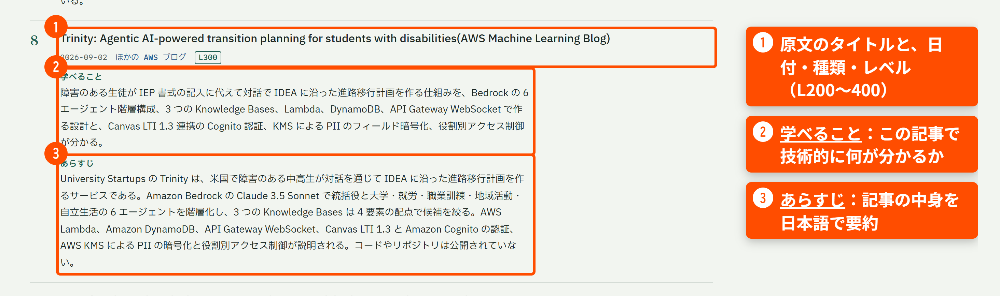
02
厳選 100 は分野と言語のボタンで絞り込める
タブ ① 厳選 100 一覧の上にあるボタン
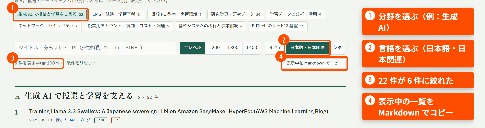
レベル（L200〜L400）でも絞り込めます。英語の記事は、ブラウザの翻訳機能と一緒に読むのがおすすめです。
02
教育のテーマから探すなら「テーマ別」の章を開く
タブ ② テーマ別 タブを押すと表示される
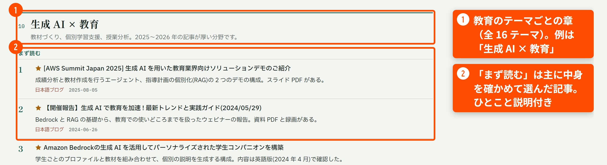
02
語句で探すなら「全件索引」の 2,834 件から探す
タブ ③ 全件索引 タブを押すと表示される
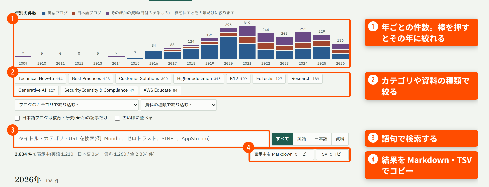
03
索引から1本解説 ・ 厳選 100 の #8
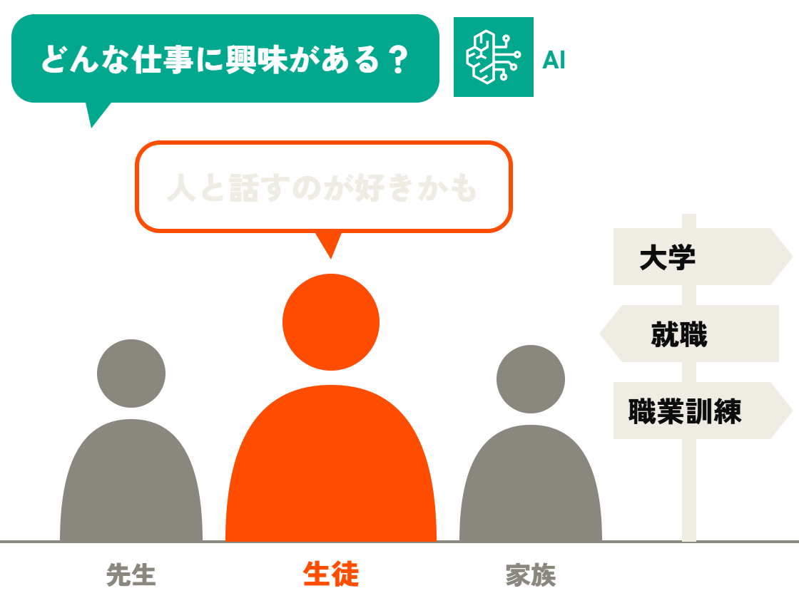
障害のある生徒の進路を日本でも使える？
米国 ・ Trinity 生徒が AI と話しながら、進路の計画書（IEP）を作る
→
日本では？ 同じ仕組みで「個別の教育支援計画」づくりを支えられるか
03
生徒が、AIとの対話で自分の目標を決める。
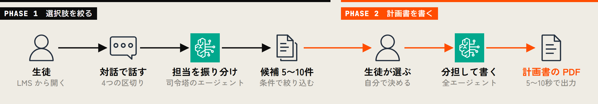
成果 記事によると、計画書は10分以内に仕上がり、最初の年のうちに米国の10以上の州 の教育者と学生に届いた
開発：University Startups（企画）と AWS パートナーの g/d/n/a（実装）
03
Trinity は役割ごとに6つのエージェントを分けている
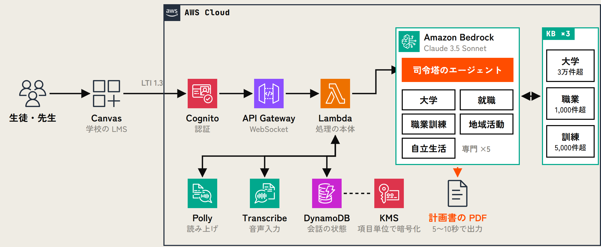
LTI 1.3 ：LMS に外部のツールを組み込む標準規格。KB ：Knowledge Bases（検索に使う知識ベース）。図は記事の説明をもとに発表者が描いたもので、サービス間の線は推測を含む
03
Trinity を日本で作るなら書類・法律・入口・データを置き換える
日本で活かす：① Trinity の日本版を作る ② 要素技術を日本の文教ビジネスに応用する
比べること
米国の Trinity
日本で作るなら（発表者の案）
AI が作る書類
個別教育計画（IEP）の進路の部分
学校が作る「個別の教育支援計画」「個別の指導計画」
個人情報の法律
FERPA（教育記録）、HIPAA（医療情報）
個人情報保護法。障害の情報は要配慮個人情報 （特に慎重に扱う情報）にあたる
使い始める入口
学校の LMS（Canvas）
学校や自治体が使っている LMS・学習 e ポータル
進路の候補のデータ
大学 3万件超、職業 1,000件超、職業訓練 5,000件超
大学・専門学校の情報、厚労省の job tag、ハロートレーニングなど
右の列は、記事の内容をもとに発表者が考えた対応です。計画の様式は自治体や学校ごとに異なります。
03
Trinity の要素技術は日本の文教ビジネスにも応用できそう
日本で活かす：① Trinity の日本版を作る ② 要素技術を日本の文教ビジネスに応用する
Who（誰に）と What（何を）は別の事業を考え、How（どう実現するか）は Trinity の要素技術を借りる 。
Who：誰に
What：何を
How：借りられる Trinity の技術
高校の進路指導
障害の有無を問わず、生徒が対話で強みを整理し、進学・就職の候補を見つける
司令塔と専門の AI（大学・就職）の分担。対話での聞き取り
塾・予備校
志望校の候補選びと、合格までの学習計画を対話で作る
大学の知識ベースの検索。地域や費用を入れた候補の順位づけ。計画書の出力
大学の障害学生支援室・キャリアセンター
配慮の相談から就職活動の計画までを、対話で1つにつなぐ
大学の LMS から ID を増やさずに使う仕組み（LTI 1.3）。役割ごとの閲覧制限
就労移行支援などの福祉事業所
利用者の希望を聞き取り、支援の計画と求人の候補をまとめる
読み上げと音声入力。職業の知識ベース
表のアイデアは、発表者が考えた仮説です。
記事：Trinity: Agentic AI-powered transition planning for students with disabilities
04
Behind The Slides
この発表資料はどうやって作った？
ME slide-template で10分の発表資料を作って。タイトルは「AWS×教育の公式リソース100連発」
ME 文字ではなく、画像でよいところは画像にして。AWS の構成図も
ME 発表ノートを書きながら、ストーリーが自然につながるように直して
注 ：実際に AI に出した指示を短くまとめたもの
04
この資料は Claude Code で半自動で作った
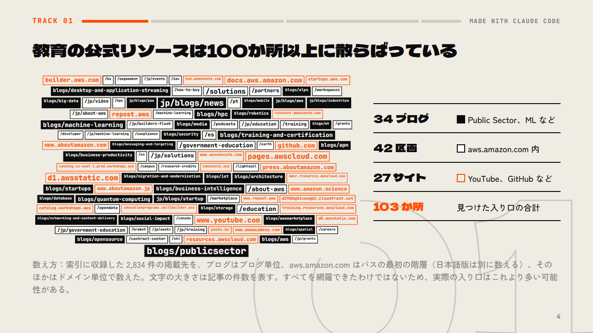
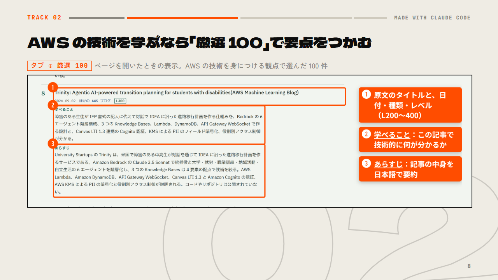
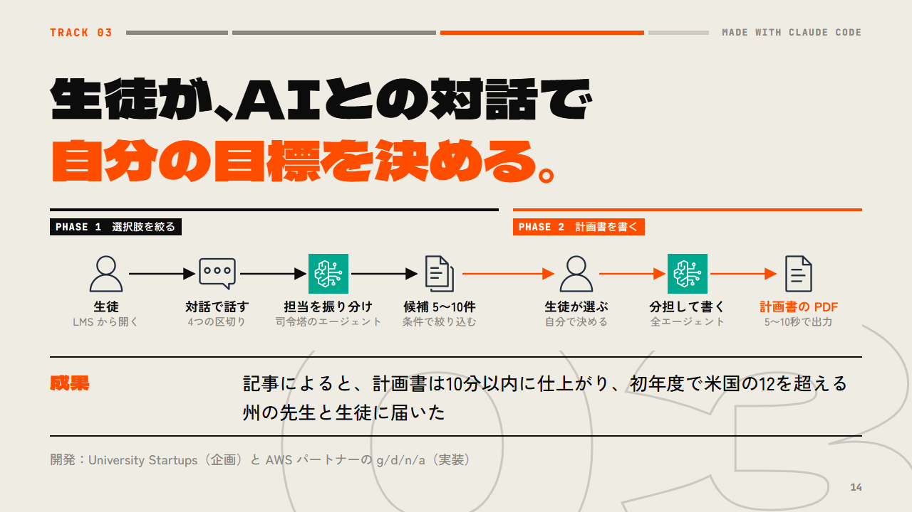
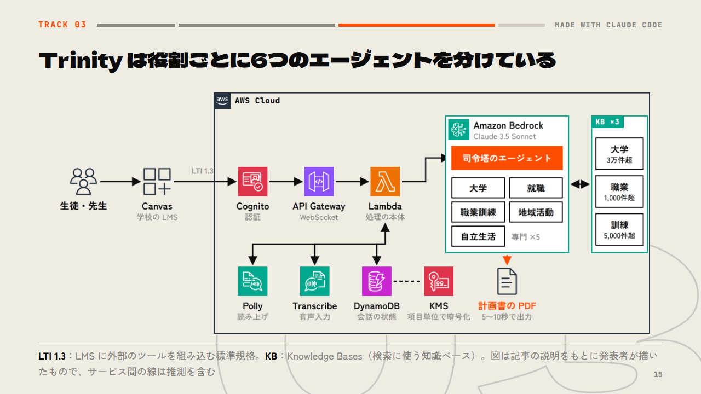
END
まずは厳選 100 から.
kenta-matsuda.github.io/aws-bunkyo-references MADE WITH CLAUDE CODE
03
Appendix ・ TRACK 03 の補足
付録：Trinity を日本で作るなら法令はどう違う？
この付録は、TRACK 03 で取り上げた米国の事例「Trinity」を日本で作る場合に、米国と日本で法令がどう違うかを整理したものです。Trinity は、障害のある生徒が AI と対話しながら進路の計画書を作る仕組みで、AWS のブログで紹介されています。本編の「書類・法律・入口・データを置き換える」の表のうち、「書類」と「法律」の行を、次の 4 つの観点で詳しく説明します。
① AI が作る書類の法的な位置づけ（2 枚）
法令の解釈は、発表者が調べて整理したものです。実際に作るときは、法律の専門家に確認してください。発表では使いません。
03
① 書類（1/2）：米国は項目まで法定、日本は様式が自由
まず、AI が作る書類そのものの法的な位置づけを比べます。米国では IEP（Individualized Education Program、個別教育計画）、日本では「個別の教育支援計画」が、障害のある児童生徒のために学校が作る計画書にあたります。
比べること
米国の IEP
日本の個別の教育支援計画
何の法律で決まっているか
IDEA（障害者教育法）という連邦法と、その規則（34 CFR 300.320(b)）で決まっています。計画に書く項目まで全国共通です。
学習指導要領と学校教育法施行規則で決まっています。2018 年 8 月の施行規則の改正で、作成が義務になりました。書く項目や様式は、自治体や学校が決めます。
誰のために作るか
特別教育を受けるすべての生徒のために作ります。
特別支援学校、特別支援学級、通級（通常の学級に在籍しながら、別の場で指導を受ける形）の児童生徒のために作ります。通常の学級の児童生徒については、作るよう努めることになっています。
03
① 書類（2/2）：進路の項目は米国だけが法令で決めている
前の枚の続きです。Trinity が AI で作る「進路」の項目と、生徒本人の参加について比べます。
比べること
米国の IEP
日本の個別の教育支援計画
進路の項目はどう扱われるか
生徒が 16 歳になる年度の IEP から、進学・職業訓練・就労・自立生活の目標と、そのための支援を書くことが必須です。毎年更新します。州によっては 14〜15 歳から始めます。
進路は計画の内容に含まれますが、何歳から書くか、何を書くかは法令で決まっていません。
本人の参加と、守らせる仕組み
進路を話し合う会議には、生徒本人を招く義務があります。学校が計画を守らない場合、保護者は不服申し立てや審問を求めることができます。
保護者と話し合って合意を作ることが前提です。本人を招く義務や、不服申し立ての手続きは、法令にはありません。
似ている点と、日本版への含意 どちらも、幼児期から卒業後まで一貫した支援を目的として、福祉・医療・労働の関係機関と連携して作る文書です。米国では項目が全国共通に決まっているので、Trinity は進路の部分を AI で作れます。日本では様式が自治体や学校ごとに違うので、日本版では出力の形を差し替えられる作りが必要になります。
03
② 個人情報（1/2）：日本は障害の情報を法律で特別に扱う
次に、生徒の個人情報を扱うときに従う法律を比べます。Trinity は、生徒の障害の情報や成績を AI に渡して進路の候補を出すので、どの法律の下でデータを扱うかが最初の論点になります。
比べること
米国
日本
基本になる法律
FERPA（家族の教育権とプライバシーに関する法律）が、学校の「教育記録」を保護します。学校が持つ健康情報も教育記録として FERPA の対象です。医療情報の法律である HIPAA は、外部の医療機関が作った記録などに限って関係します。
個人情報保護法が基本です。2023 年 4 月からは、自治体や公立学校も、民間と同じこの法律の下で扱います。
障害の情報の位置づけ
教育記録の一部として保護されます。障害の情報だけを特別に区分する仕組みはありません。
「要配慮個人情報」にあたります。差別や偏見につながらないよう特に慎重に扱う情報の区分で、施行令第 2 条第 1 号に身体障害・知的障害・精神障害（発達障害を含む）が挙げられています。取得には本人の同意が原則として必要で、オプトアウト（本人が拒否しない限り提供できる仕組み）による第三者提供はできません。
業者がデータを扱える根拠
学校が業者（Trinity の運営者など）を「学校職員」とみなし、学校の直接の管理下で契約して使わせる例外規定があります。
学校が業者に「委託」する形で扱わせます。学校には、委託先を監督する義務があります。
03
② 個人情報（2/2）：契約の下で扱うという骨格は同じ
前の枚の続きです。本人と保護者の権利、学校向けに上乗せされるルール、データを置く場所を比べます。
比べること
米国
日本
本人と保護者の権利
保護者と生徒には、記録を閲覧し、訂正を求める権利が連邦法で明記されています。
本人には、開示・訂正・利用停止を請求する権利があります。
学校向けに上乗せされるルール
州法が教育系の業者を直接規制しています。たとえばカリフォルニア州の SOPIPA は広告目的の利用や販売を禁じ、ニューヨーク州の教育法 2-d は契約に入れる条項を定めています。
文部科学省の「教育情報セキュリティポリシーに関するガイドライン」（2025 年 3 月改訂）と、それにもとづく自治体ごとの基準があります。
データを置く場所
連邦法には、国内に置くという要件はありません。州や契約で指定されることがあります。
法律には、国内に置くという要件はありません。ただし、自治体の基準で国内のデータセンターを求める例が多くあります。Amazon Bedrock は東京リージョンでも使えます。
似ている点と、日本版への含意 業者は学校との契約の下で扱うこと、利用目的を限定すること、本人と保護者に開示を求める権利があること、という骨格は同じです。違いは、日本では障害の情報が法律で「要配慮」と区分されていることです。日本版では、本人と保護者から同意を取る方法を、設計の最初に決める必要があります。
03
③ 合理的配慮：方向は同じで、義務の強さが違う
3 つめは、障害のある人への差別を禁じ、合理的配慮（その人に合わせた調整）を求める法律です。Trinity には読み上げと音声入力の機能があり、こうした法律に沿った作りになっています。
比べること
米国
日本
差別禁止と合理的配慮を定める法律
ADA（障害のあるアメリカ人法）と、リハビリテーション法 504 条です。公立学校には、以前から合理的配慮を提供する義務があります。
障害者差別解消法です。公立学校には以前から義務があり、2024 年 4 月の改正で、民間事業者にも合理的配慮の提供が法的義務になりました。
アプリやサイトのアクセシビリティ
2024 年の司法省の規則により、州や自治体（公立学校を含む）の Web サイトとアプリは、WCAG 2.1 の AA レベル（Web アクセシビリティの国際的な基準）に適合することが義務です。
国内規格の JIS X 8341-3（WCAG と同じ内容）に適合することは、法律上は「環境の整備」として努力義務です。
配慮を提供する範囲
過度の負担にならない範囲で提供します。
同じく、過重な負担にならない範囲で提供します。
似ている点と、日本版への含意 どちらの国も、読み上げや音声入力のような配慮を求めている点は同じです。違いは義務の強さで、米国ではアクセシビリティの基準への適合が義務、日本では努力義務です。日本版でも、Trinity と同じ機能を備えておくのが安全です。
03
④ 生成 AI：専用の法律はなく、指針で運用している
最後に、生成 AI そのものに関するルールです。両国とも、生成 AI を直接規制する法律はなく、行政の指針で運用しています。
比べること
米国
日本
生成 AI の専用の法律
ありません。教育省のガイダンスと、州の学生データ保護法の枠内で運用します。
2025 年 5 月に AI 推進法が成立しましたが、基本法で罰則はありません。学校向けには、文部科学省の「初等中等教育段階における生成 AI の利活用に関するガイドライン」Ver.2.0（2024 年 12 月）があります。
生成 AI に個人情報を入力するとき
FERPA と州法の枠内で、業者との契約で縛ります。
個人情報保護委員会が 2023 年 6 月に注意喚起を出し、要配慮個人情報を本人の同意なく生成 AI に入力しないよう求めています。
権利が本人に移る年齢
成年（多くの州で 18 歳）になると、権利が保護者から生徒本人に移ります。その 1 年前までに、本人に知らせたことを IEP に書きます。
2022 年 4 月から、成年は 18 歳です。個人情報保護委員会の Q&A では、おおむね 12〜15 歳以下の子どもについては、法定代理人の同意が必要とされています。
日本版 Trinity への含意 障害の情報を Amazon Bedrock に送ること自体が、要配慮個人情報を生成 AI に入力することにあたります。本人と保護者から同意を取る方法、入力した内容を AI の学習に使わないという契約条件、ログの保存先の 3 つを、設計の最初に決める必要があります。
【ノート】20秒
AWS Education WG の松田です。Qiita では kenken38 という名前で記事を書いています。
今日は「AWS×教育の公式リソース100連発」というタイトルで、AWS が公開している教育向けの記事や資料を集めて、1つの索引にまとめた話をします。
【ノート】20秒
今日は4つの問いに沿ってお話しします。
1つめは、AWS の教育向けの公式リソースがどこにあるのか。2つめは、私が作った索引をどこから読めばいいのか。3つめは、索引の中から米国の事例を1本ピックアップして解説し、日本でも使えるかを考えます。最後に、おまけとして、この発表資料自体をどうやって作ったかを紹介します。
（持ち時間10分の配分：表紙と目次 0:40、TRACK 01 1:45、TRACK 02 3:40（うち厳選 100 の一覧 21 枚で約1分）、TRACK 03 3:50、TRACK 04 と締め 1:10。合計 11:10。超える分は、TRACK 03 の構成図と日米の対応表の説明を短くして調整する）
【ノート】10秒
では1つめの問いです。AWS の教育向けの公式の記事や資料を探すとき、皆さんならどこを探しますか。
【ノート】45秒
答えは「100か所以上」です。私が見つけた範囲だけでも、103か所ありました。
英語の Public Sector Blog と日本語の AWS ブログが中心ですが、Machine Learning Blog や HPC Blog など、教育の記事が見つかったブログが34ありました。aws.amazon.com の中にも、導入事例やソリューションのページが42区画、さらに YouTube、GitHub、re:Post といったサイトが27ありました。
図の文字の大きさは、記事の件数を表しています。Public Sector Blog がいちばん大きいのですが、その周りに小さな入り口がこれだけ散らばっています。教育の記事を漏れなく探そうとすると、これを全部回ることになります。しかも、私も全部を見つけられたとは言い切れないので、実際にはもっとあるかもしれません。
ちなみに、偶然ですが、入り口の数も100を超えました。
【ノート】50秒
そこで、見つけた103か所の記事を1つのページにまとめました。これが、今日いちばん見ていただきたい「AWS×文教 公式リソース索引」です。
英語のブログ 1,210件、日本語のブログ 364件、そのほかの資料 1,260件、合わせて 2,834件を、この1ページで探せます。さらに、その中から、技術的に学びが多く、教育の仕事に結びつきが強いと私が判断した100件を選んで、1件ずつあらすじを付けました。今日のタイトルの「100連発」は、この厳選100のことです。
右上のボタンで、日本語と英語を切り替えることもできます。GitHub Pages で公開していますので、ぜひ URL を控えておいてください。
とはいえ、いきなり 2,834件と言われても、どこから読めばいいか迷いますよね。
【ノート】10秒
そこで2つめの問いです。この索引は、どこから読めばいいのか。
答えは、目的に合わせて「厳選100」、「テーマ別」、「全件索引」の3つを使い分けることです。
【ノート】25秒
この3つは、公開ページの上のほうにあるタブで切り替えます。
AWS の技術を学びたいときは、①の「厳選100」。ページを開くと最初に表示されます。教育のテーマから入り口を探したいときは、②の「テーマ別」。探したい語句が決まっているときは、③の「全件索引」です。
では、最初に表示される「厳選100」から見ていきます。
【ノート】30秒
厳選100では、1件がこのような形になっています。
①には、原文のタイトルと、日付・種類・レベルが並んでいます。②の「学べること」には、この記事から技術的に何が分かるかを書いています。③の「あらすじ」は、記事の中身を日本語で要約したものです。
英語の記事でも、ここを読めば、元の記事を開いて読むかどうかを判断しやすくなります。
【ノート】35秒
100件を全部読む必要はありません。
①で分野を選び、②で言語を選ぶと、たとえば生成 AI の22件が、③のように日本語・日本関連の6件に絞れます。
④のボタンを押すと、表示中の一覧を Markdown でコピーできるので、社内の勉強会の資料にそのまま貼れます。
では、その100件を一気に見ていきましょう。
appendix:start
【ノート】10秒
では、タイトルの「100連発」です。厳選100を、分野ごとに一気にお見せします。細かく読む必要はありません。気になるタイトルがあったら、あとで資料のリンクから開いてください。
【ノート】2〜3秒で次へ（流し見）。#8 の Trinity は、このあと3つめのトラックで詳しく紹介します
【ノート】2〜3秒で次へ（流し見）。最後の1枚：以上が厳選100です。それぞれの記事の「学べること」と「あらすじ」は、公開ページで読めます。では、索引のほかの使い方も見ておきます。
appendix:end
【ノート】30秒
②の「テーマ別」のタブに切り替えると、教育の領域を16のテーマに分けた章が並びます。たとえば①の「生成AI×教育」の章では、②の「まず読む」に、主に本文を確かめて選んだ記事を、ひとこと説明付きで並べています。日本語の記事を先に並べているので、上から順に読んでいけます。
【ノート】30秒
探したい語句が決まっているときは、③の「全件索引」のタブに切り替えて、2,834件から探します。
①の棒グラフで年を絞ったり、②のカテゴリや資料の種類で絞ったり、③で語句を検索したりできます。結果は④のボタンで、Markdown や TSV としてコピーできます。
ここまでが、索引の読み方です。では実際に、厳選100から1本、読んでみましょう。
【ノート】10秒
3つめは、索引から1本をピックアップして解説します。本当は100本すべて紹介したいところですが、今日は時間の都合で、厳選100のうちの1本、さきほど画面でもお見せした #8 の「Trinity」を取り上げます。障害のある生徒が、先生や家族と一緒に、AI と対話しながら進路を考える。そんな米国の事例です。日本にも、障害のある児童生徒について学校が作る「個別の教育支援計画」があります。同じ仕組みで、その計画づくりを支えられるのでしょうか。
【ノート】30秒
取り上げるのは、索引の #8 から開ける、右の記事です。2026年9月2日に AWS の Machine Learning Blog に載った英語の記事です。
まず、Trinity とは何かです。障害のある生徒と AI が対話して、卒業後の進路の計画を作るサービスです。米国の中学生・高校生と、その先生が使っています。米国では、障害のある生徒ごとに「個別教育計画」、略して IEP を作ることが法律で義務づけられていて、Trinity はそのうち進路の部分を作ります。企画したのは University Startups という団体で、開発は AWS パートナーの g/d/n/a です。
【ノート】40秒
Trinity のいちばんのポイントは、生徒が AI との対話を通じて、自分の目標を自分で決めることです。記事には「生徒について書かれた計画を渡されるのではなく、生徒自身が対話を通じて自分の目標にたどり着く」と書かれています。
流れは2段階です。PHASE 1 では、生徒が学校の LMS から開いて AI と対話します。司令塔のエージェントが担当を振り分け、大学や就職などの候補を5〜10件に絞って示します。PHASE 2 では、生徒が自分で選び、すべてのエージェントが分担して計画書を書き、5〜10秒で PDF にします。
記事によると、米国の法律 IDEA に沿った計画書が10分以内に仕上がり、最初の年のうちに、米国の10以上の州の教育者と学生に届いたそうです。
【ノート】50秒
これを支える AWS の構成を、記事の説明をもとに図にしました。サービスどうしのつなぎ方は、記事に書かれていない部分を私が補っています。
生徒と先生は、学校の LMS である Canvas から LTI 1.3 という規格で入るので、新しい ID を作る必要がありません。Cognito で認証し、API Gateway の WebSocket を通って、Lambda が処理します。
中心は Amazon Bedrock です。記事によると、1つのモデルでは相談から計画書までの流れを担いきれなかったため、司令塔と5つの専門エージェントに分けたそうです。専門エージェントは、大学3万件超、職業1,000件超、訓練5,000件超の3つの知識ベースを検索します。検索の点数は、意味の近さだけでなく、地域や支援体制、費用も加えて決めています。
会話の状態は DynamoDB に置き、個人情報は KMS で項目単位に暗号化しています。Polly と Transcribe で、音声でも使えます。
では、これを日本に持ってくると、何が変わるでしょうか。
【ノート】50秒
ここからは、この事例を日本でどう活かせるかを、2つの方向で考えます。1つめは、Trinity の日本版を作る場合です。
私の見立てでは、仕組みの多くは日本でも使えそうです。日本向けに置き換える必要があるのは、主にこの4つだと考えています。
1つめは、AI が作る書類です。日本では、特別支援学級や通級の児童生徒について「個別の教育支援計画」と「個別の指導計画」を作ることになっています。2つめは、個人情報の扱いで従う法律です。日本では個人情報保護法が基本になり、障害に関する情報は、特に慎重な扱いが必要な「要配慮個人情報」にあたります。学校で使うなら、文部科学省の教育情報セキュリティのガイドラインもあわせて確認が必要です。3つめは、生徒が使い始める入口です。日本なら、学校や自治体がすでに使っている LMS や学習 e ポータルになります。4つめは、進路の候補のデータです。厚生労働省の job tag や、公的職業訓練のハロートレーニングなどが候補になりそうです。
この右の列は、記事をもとに私が考えた対応です。計画の様式は自治体ごとに違うので、出力の形を差し替えられる作りにしておく必要があります。なお、Bedrock は東京リージョンでも提供されているので、データを国内に置く要件があっても検討しやすいと思います。使えるモデルはリージョンごとに確認が必要です。
ここまでは、Trinity の日本版を作る話でした。次は2つめの方向として、Trinity で使われている要素技術を、日本の文教ビジネスに応用できないかを考えます。
【ノート】50秒
2つめの方向は、Trinity で使われている要素技術を、日本の文教ビジネスに応用することです。「Who・What・How」という、ビジネスモデルを考えるときの基本の枠組みで整理してみました。
ポイントは、Who と What、つまり「誰に、何を」は Trinity とは違う事業を考えて、How、つまり「どう実現するか」は Trinity の要素技術を借りる、ということです。
たとえば、障害の有無を問わない高校の進路指導。塾や予備校の志望校選びと学習計画。大学の障害学生支援やキャリアセンター。就労移行支援などの福祉事業所。どれも、対話で聞き取る仕組みや、候補の順位づけ、閲覧制限といった技術を応用できそうです。
どれも私の仮説ですが、皆さんの事業に当てはめると、どんな Who と What が考えられるでしょうか。
厳選100には、こうしたヒントが詰まった記事が、あと99本あります。
【ノート】15秒
最後に、おまけです。今日お見せしたこの発表資料は、どうやって作ったと思いますか。
実は、画面に出ているような指示を、AI に出しただけです。
【ノート】40秒
この資料は、Claude Code（Opus 5.5）と、私が公開している slide-template というテンプレートを使って、半自動で作りました。
素材と指示を渡すと、AI が構成を提案し、スライドの元になるファイルを書き、構成図や、注釈付きの画面のスクリーンショットまで作ってくれます。上に並べた4枚も、この資料のスライドそのものです。
作業していた時間を合計すると、PPTX ができあがるまでにかかったのは約3時間半です。私が出した指示は19回で、私の作業は、主に指示を書くことと、事実と言い回しを確かめることでした。資料の中身や人によって時間は変わりますが、1つの参考値として受け取ってください。
次に登壇される方は、資料作りの時間を減らすために、ぜひ使ってみてください。
【ノート】20秒
今日お伝えしたかったことは1つです。まずは、厳選100から読んでみてください。きっと、皆さんの仕事に効く1本が見つかると思います。
URL はこちらです。ご清聴ありがとうございました。
【ノート】付録。発表では使わない。質疑で聞かれたときの手元資料。
【ノート】付録。発表では使わない。質疑で聞かれたときの手元資料。
【ノート】付録。発表では使わない。質疑で聞かれたときの手元資料。
【ノート】付録。発表では使わない。質疑で聞かれたときの手元資料。
【ノート】付録。発表では使わない。質疑で聞かれたときの手元資料。
【ノート】付録。発表では使わない。質疑で聞かれたときの手元資料。
【ノート】付録。発表では使わない。質疑で聞かれたときの手元資料。
【ノート】付録。発表では使わない。質疑で聞かれたときの手元資料。